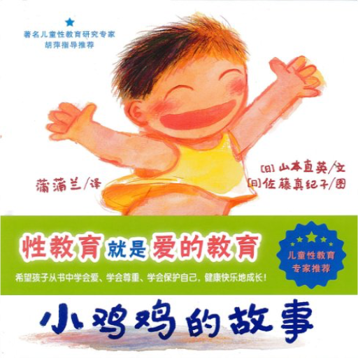 蒲蒲兰绘本馆•身体与心灵绘本系列:小鸡鸡的故事山本直英  你是男孩，还是女孩？你是怎样知道自己是男孩的呢？男孩和女孩，哪里不一样呢？…… 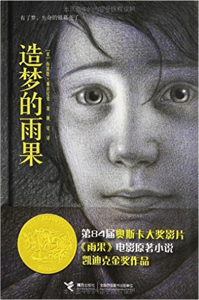 造梦的雨果布莱恩•塞兹尼克 《造梦的雨果》讲述了人类造梦的手段，让我们这个世界变得神奇。《造梦的雨果》意在向早期默片、早期电影的创始人乔治梅里爱先生致敬，《造梦的雨果》被大导演马丁斯科塞斯搬上银幕，获到奥斯卡5项技术类大奖。被誉为是“写给黑白默片的立体情书”。 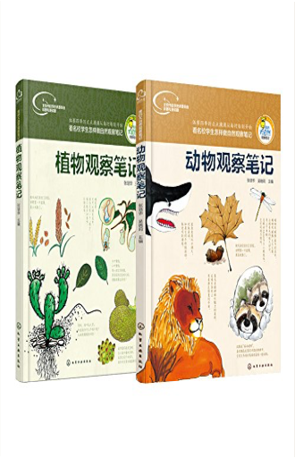 我的大自然观察笔记张培华 艺术对科学的探索，艺术与学习的融合 《我的大自然观察笔记》丛书从小学生对动物的好奇心与求知欲出发，围绕动、植物的特征、特性、生活习性等，用他们自己生动，趣味、探索的绘画与文字创作向我们展现了他们的想象力和探索力，呈现出他们敢于创新、勇于探索的科学态度。其次，体现青少年的探索科学知识过程。《我的大自然观察笔记》丛书是一本科普观察和绘画艺术结合的书；是一本孩子们自己创作的有关动物科普的书，是一本科学老师与美术老师指导、科普专家把关的亲和力极强的书，是一本纸质图书与APP 应用互动的书。 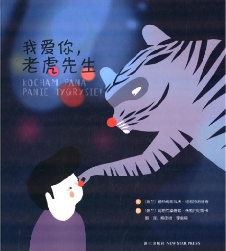 我爱你,老虎先生普热梅斯瓦夫•维和特洛维奇 《我爱你,老虎先生》讲述了一个叫小飞的小男孩和奶奶住在森林边缘，过着平静而幸福的生活。没有朋友陪伴的小飞总觉得有点孤独，想着养一只宠物。一天，一头神秘的老虎出现了，打破了他们平静的生活。 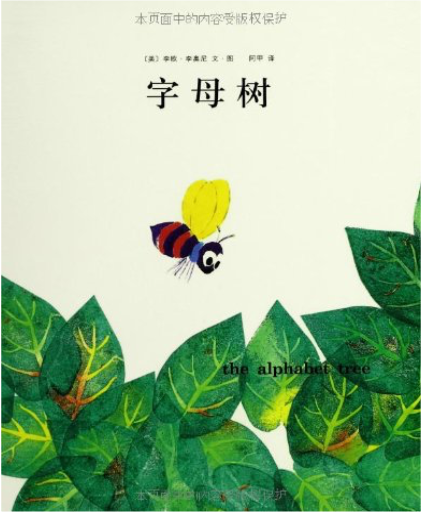 字母树李欧·李奥尼 《字母树》主要内容：一棵大树上住着许多快乐的字母。有一天，风暴袭来，字母们害怕得躲在低矮的枝叶深处。一只奇特的虫子飞来，教字母们组成单词来抵挡强风。后来，一只毛毛虫又教字母们做了一件他们从来没想过的事情，那就是——组成句子，说些有意思的事情……字母们组合在一起，写出了“世界和平，造福全人类”。原来，当字母们组合在一起，书写出文字时，远比强劲的大风更有力量。 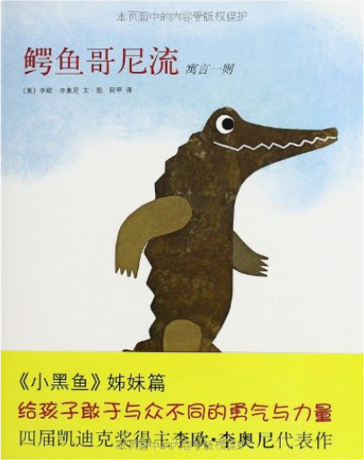 李欧•李奥尼作品集06:鳄鱼哥尼流寓言一则李欧·李奥尼 《李欧•李奥尼作品集06:鳄鱼哥尼流寓言一则》的主要内容是：哥尼流是一只直立着身子走路的高大鳄鱼，可就因为这样他遭到了大家的排斥。于是，他离开了家。途中，他向一只猴子学习了倒立和用尾巴倒挂在树上的技巧。回去以后，他和同伴们分享了他所看到和学到的本领。那个一成不变的环境开始起了变化。 | 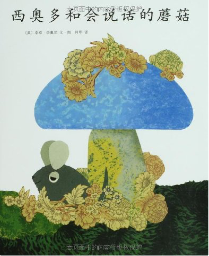 李欧•李奥尼作品集14:西奥多和会说话的蘑菇李欧·李奥尼 《李欧•李奥尼作品集14:西奥多和会说话的蘑菇》讲述了在一个老橡树墩和里，信着四个好朋友——蜥蜴、青蛙、乌龟、和一只名叫西奥多的老鼠的故事。 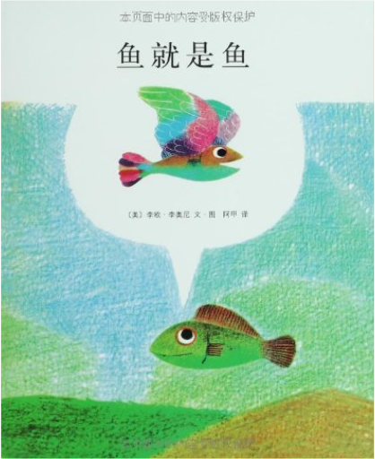 鱼就是鱼李欧·李奥尼 《鱼就是鱼》内容简介：原来我们身边的世界如此精彩！池塘里有一条小鱼和一只蝌蚪，他们形影不离。慢慢地，蝌蚪变成了青蛙，并且离开池塘看到了外面的世界。他跟鱼讲述了自己新奇的见闻，鱼也开始憧憬起外面的世界来。有一天，他终于鼓足勇气，爬上了岸…… 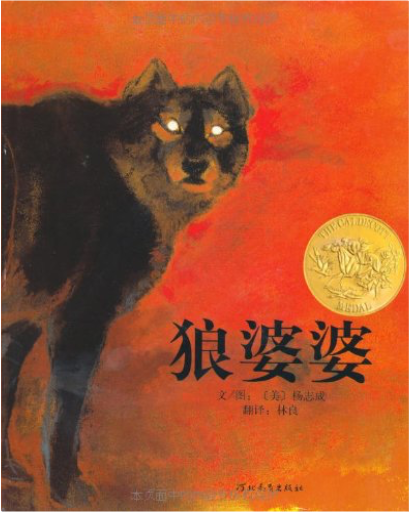 狼婆婆杨志成 《狼婆婆》内容简介：很久以前，每当妈妈出门之后，狼婆婆就会来敲门了，阿珊、阿桃和宝珠究竟能不能识破狼婆婆的阴谋呢？绘者利用粉笔渲染的特性，将动物兽性的跳跃距离拉长，彷佛呼吸到野狼出没的气味。明暗色调的强烈对比，让人有不寒而栗的诡异效果。 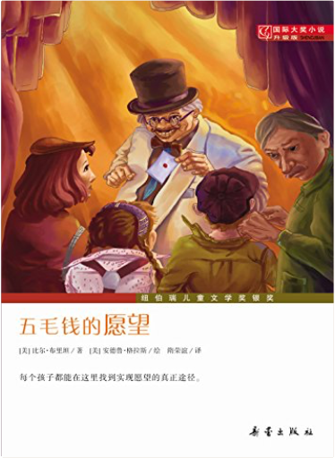 国际大奖小说:五毛钱的愿望比尔•布里坦(Brittain.B.) 《五毛钱的愿望(升级版)》的主人公司徒•米特是巫师树村一家杂货店的店主。他向我们讲述了村子里发生的一系列怪事：在巫师树村召开的教友联谊会上，来了一个名叫泰德司•布林的奇怪的小矮人。他声称只要花五毛钱从他那儿买一张带红点的卡片，就可以使你的一个愿望得以实现。十一岁的波莉是个说话没有分寸的坏脾气女孩子，为此她得罪了不少人，她的愿是让大家都喜欢她；罗威娜是个轻浮的女孩儿，十五岁时就开始谈情说爱，她看上了每年两次到镇上来卖农具的亨利•派朴尔，她的愿望是让他永远留在自己身边；十六岁的男孩儿亚当，因自家农场干旱缺水而愁眉不展，他再也不愿到远处的蜘蛛河去拉水，他的愿望是农场到处都是水。最后，三个人的愿望都以出人意料的方式实现了……《五毛钱的愿望(升级版)》荣获1984年纽伯瑞儿童文学奖银奖。 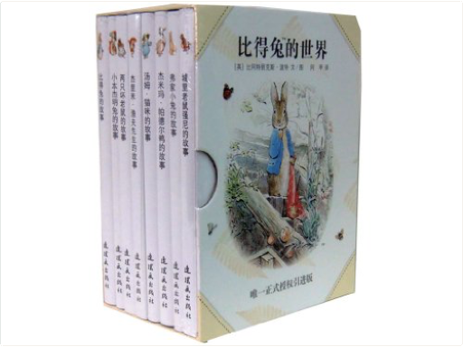 比得兔的世界比阿特丽克斯·波特 (Potter.B.) 《比得兔的世界(套装共8册)》共分为《比得兔的故事》、《小本杰明兔的故事》、《两只坏老鼠的故事》、《杰里米•渔夫先生的故事》、《汤姆•猫咪的故事》、《杰米玛•帕德尔鸭的故事》、《弗家小兔的故事》、《城里老鼠强尼的故事》共8册。 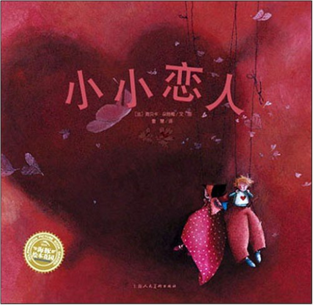 海豚绘本花园:小小恋人海贝卡·朵特梅 《小小恋人》主要内容：厄尼斯老爱捉弄沙乐美，沙乐美把这件事告诉了妈妈，但妈妈竟然说，那是因为厄尼斯爱上了沙乐美。可是，恋爱是什么呢？沙乐美去问小朋友们，小朋友们以天真的口吻，诉说了他们心目中对“恋爱”的想法与猜测，充满了趣味与天真的答案，令人莞尔。 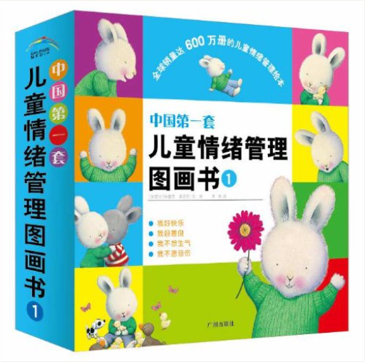 中国第一套儿童情绪管理图画书1特蕾西•莫洛尼 “中国首套儿童情绪管理图画书”系列描述了孩子们日常生活中的点点滴滴，全面展现了孩子们的生活全貌和心理特征，能够让孩子清楚地认识自己的情感；用合适的方式表达自己的情感；减少压力，释放自我；同情他人，乐于倾听。本书以孩子的内心感受（生气、悲伤、快乐、善良）为题材。文字韵律优美、宛如儿歌；形象活泼可爱、亲近孩子；画面简单、色彩亮丽。帮助孩子们认识自我、表达天性、释放压力、健康生活。 |

于儿的书架
Collection Total:
114 Items
114 Items
Last Updated:
Sep 6, 2017
Sep 6, 2017
 Made with Delicious Library
Made with Delicious Library